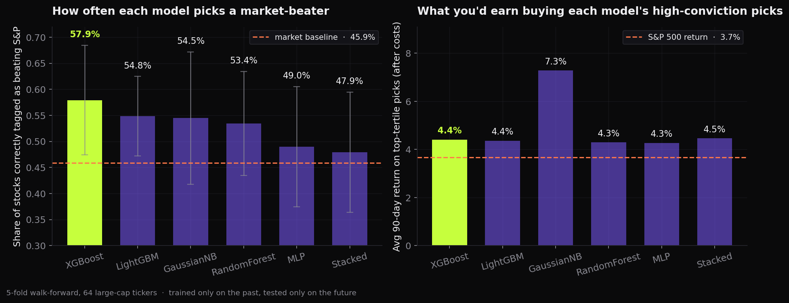

A machine-learning model that reads a company's quarterly report and recent price history and predicts whether the stock will outperform the S&P 500 over the next 90 days. The current best model picks winners 57.9% of the time against a 45.9% baseline, and its top picks beat the index by an average of 3.6% per quarter in backtests.
Every public company files a quarterly report packed with numbers — revenue, margins, debt, cash flow. The market reacts to all of it. The question this project asks is simple: can a model read those numbers, plus how the stock has been moving recently, and tell you which stocks are likely to beat the S&P 500 over the next three months?
The original college version of this project answered "will the stock go up?" — a question that's roughly 54% "yes" by default, because most stocks rise most of the time. Reframing it as "will it beat the market?" makes the bar much harder and the answer much more useful: only about 46% of stocks beat the index in any given quarter, so anything meaningfully above that is real signal.
For 64 large-cap U.S. companies, the model gets two kinds of signals at the moment of each earnings release:
17 ratios from the latest quarterly report: profit margins, return on assets, debt levels, cash flow quality, year-over-year revenue growth. Standardized so a tech company and a bank are on the same scale.
How the stock and the broader market have been moving: 3, 6, and 12 month returns leading up to the filing, recent volatility, and the same for the S&P 500 — so the model knows whether we're in a calm or stormy regime.
Trained only on the past, tested only on the future. Five chronological folds; no test-set information ever leaks into training. Probabilities are calibrated, and a long-only backtest charges 10 basis points per round-trip trade.
Six models compete head-to-head: a Naive Bayes baseline, a small neural net, a Random Forest, XGBoost, LightGBM, and a stacked ensemble that combines the top three through logistic regression. SHAP is used afterward to confirm the model is leaning on sensible features, not pattern-matching on noise.
XGBoost is the strongest of the six, picking stocks that beat the S&P 57.9% of the time — a 12-point edge over the 45.9% baseline. When you actually buy the model's top-tertile picks each quarter, they earn an average of 4.4% over the next 90 days versus 3.7% for the index over the same window, even after accounting for trading costs.

SHAP confirms the model is leaning on sensible signals: recent price momentum, company size, the market's volatility regime, relative strength versus the index, and balance-sheet leverage. The combination of fundamentals and momentum is what carries the signal — fundamentals alone weren't enough.
Full reproduction steps, per-fold metrics, SHAP importances, and the original v1 code all live in the repo.
Open on GitHub